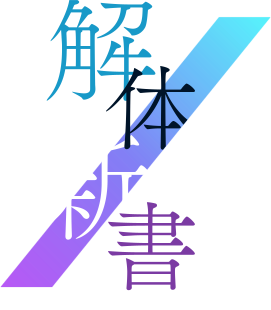

半年間一緒に過ごした
受講生だからわかる、
講師の本当の姿を徹底解説。
講師紹介
芦 沢 哲也
ASHIZAWA
から
を生み出す
クリエイター
柔軟な思考と常識に囚われない発想力に秀でており、受講生の表現の幅を広げてくれる。相手の意図を論理的かつ的確に把握し、誰にでもわかりやすく説明するのが得意。
荻 野 裕行
OGINO
を
にする
クリエイター
豊富な情報や経験、幅広い視野を持っており、受講生の見落としがちなポイントを的確に指導。
相手に寄り添って優しく指導し、受講生のアウトプットの品質をさらに向上させてくれる。
この2人の講師だから
学べた6つのポイント
現役のプロクリエイターの芦沢さん、荻野さんが、完全オリジナルでゼロから作り上げた動画教材は、2人の経験や知識が濃縮されたものになっている。ポートフォリオ制作では自分の将来を見据えた情報設計を行い、デザインやコーディングも、プロから貴重なフィードバックを何度でもいただける。能動的に学べる人におすすめしたい。
-
言語化して
的確に伝える能力他に類を見ないカリキュラムもこの講師陣ならでは。プレゼン練習は商談、営業、デザインなどの幅広いジャンルにおいても良い経験を積ませてもらえる。わかりやすく伝えることについて、考えさせられるコンテンツが揃っている。
-
UIとデザイン
についての思考法なぜそうした方が良いのか、理由を含めて的確に指摘してもらえるので、どこが足りていなかったのかを理解できる。魚にエサを与えるのではなく、魚の釣り方を学べる。
-
情報設計と
UXライティングユーザー視点の情報設計とライティング。同じ意味でも言葉を変えるだけで、ガラッと印象を変える荻野さんのライティングスキルは、非常に有益。ポートフォリオ制作では、成長できる機会が至る所にある。
-
改修に強い
コーディングスキル「CSSの変態」こと芦沢さんによる全体講義では、コーディングの超効率化やアニメーション実など、即実践に活かせる考え方が十二分に詰まっている。芦沢さんからCSS設計を教わることで、改修に強いサイトが作れる。
-
営業に対する
考え方講師が何をして現在に至ったかを経験を元にアドバイス。お客様から案件を紹介してもらえるようになるためにどうやってきたのか、どこに営業していたのか、営業をしていく上で初心者が押さえるべきポイントと心構えを学べる。
-
仕事の提案、
進め方、注意点講師の過去の案件話をフィードバックやラウンジにいる時に自然と聞ける。実は講師の2人も順風満帆に歩んできたわけではなく、トラブルに遭遇したことも。これらを踏まえ、気をつけなくちゃといけない裏のポイントも学べる。
講師に質問
-
デザインとコーディング、
どっちが好き? -
一番大変だった仕事は？
一番大変だった仕事は？
芦沢
SLashの立ち上げです。前進となったPROJECT SLashも含め、荻野さんとふたりですべてをゼロから創ったので不安もたくさんあったし本当に大変でした。でも本当に楽しかったです!（今も楽しいです!)
荻野
昔働いていた会社でやっていた、アーティストのグッズ制作の仕事は色々な意味でキツかったです。コンサート会場での販売（レジ）も自分たちでやっていたので、目の前で「今回のグッズださ〜い」と言われるのは精神的にくるものがありました。デザインです！理由はお客さんがコーディングを褒めてくれることはほぼないけど、デザインはちゃんと褒めてくれるからです笑
褒められたいので！ -
会社員をやめてフリーランスになると決心した理由は？
-
仕事で一番やらかした事件は？
-
この職業じゃなかったら何してる？
-
「意外！」と言われる一面は?
-
尊敬している人は？
-
好きなゲームは？
講師と受講生の
豊富な接点
半年間で
数え切れないほどの気づきや学び、
そして経験。
半年間で数えきれないほどの
気づきや学び、そして経験。
-
自分を深く知って
もらえる個人面談入学後すぐに講師との面談がセッティングされている。この半年間で何を磨けばよいか、あなたにフォーカスした個別のアドバイスがもらえる。
-

オープンな関係性
講師と受講生という立場の違いはあるが、講師陣の要望で、お互いに呼びやすい名前で呼び合っている。SLashの内部はわきあいあいである。。
-
雑談や自分案件の
相談もOK最初は緊張すると思うが、一時の不安で終わる。コミュ力が尋常ではないため、喋りが得意でない方でも心配ご無用。案件相談も対応してくれるため、非常に心強い。
-
妥協しない
フィードバックポートフォリオ制作では、講師陣がかなりの時間をかけてフィードバックに挑む。プロ視点からのアドバイスをリアルタイムで受ける経験はとても貴重なので、非常に有益。一人ひとりと本気で向き合うことができるのは、講師の人間性と少人数制のおかげである。
-
受講生との
レクリーエーション受講生が企画した人狼ゲーム。講師陣が企画した、ゲーム感覚でコミュニケーション力を向上できるロジックナビゲーションやワードウルフ。講師陣に遊び心があり、楽しくなるようなアイデアや工夫があちこちに見られる。
-

お悩み相談
これまで独学してきた人は悩みを聞いてくれる人がいなかったかもしれないが、SLashでは受講生同士はもちろん、講師にも気楽に相談することができる。個別面談に限った話ではなく、いつでも親身になって相談にのってくれる環境が用意されている。
講師への質問
どうしてる?
会社員とフリーランス、
2人の第1期受講生の一日
31歳 会社員
ゆーすいさん
の例
24歳 フリーランス
みさとさん
の例
前日のドラマ
朝食
夜にラウンジで講師を見かける回数は少なかったですが、前日にアポさえ取れば確実に相談できました。
直接ラウンジで話しかける方がニュアンスも含めて伝わるし、いろんな経験談も聞かせてもらえるので、とても勉強になりました!
夜にラウンジで講師を見かける回数は少なかったですが、前日にアポさえ取れば確実に相談できました。
直接ラウンジで話しかける方がニュアンスも含めて伝わるし、いろんな経験談も聞かせてもらえるので、とても勉強になりました!
最後にSLash第1期生
一同からあなたへ。
Slashは、卒業後に自分に自信をもって活躍できるクリエイターになってほしいという講師の願いが込められたスクールです。
クリエイターとしてだけでなく、人としても魅力でありたい方は、芦沢さん・荻野さんの考えにも共感できるはず。
初学者ともプロともいえないあなたのためにSLashはあります。ぜひSLash第2期の無料Web説明会に足を運んでみてください。